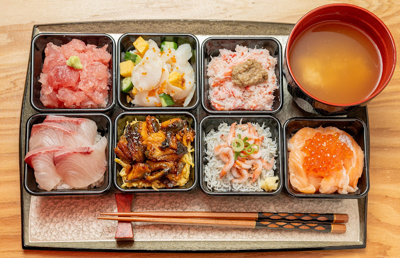
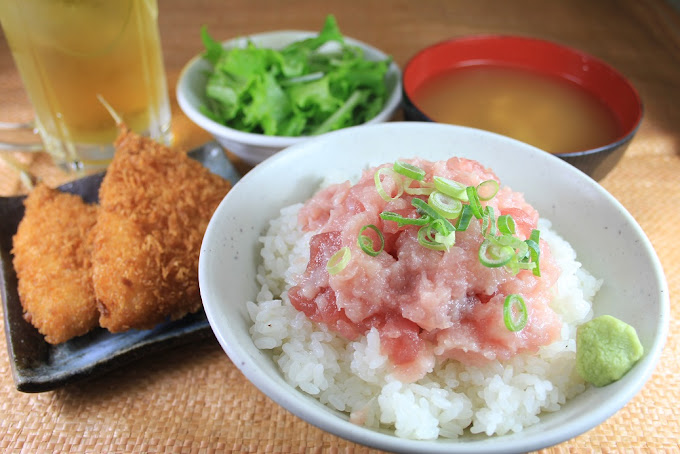
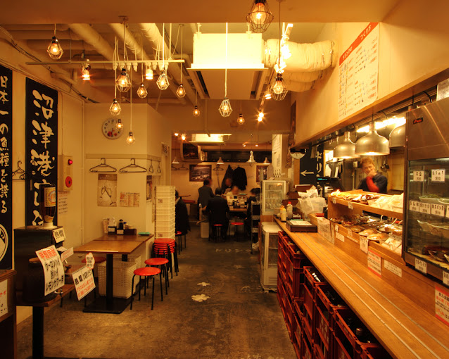
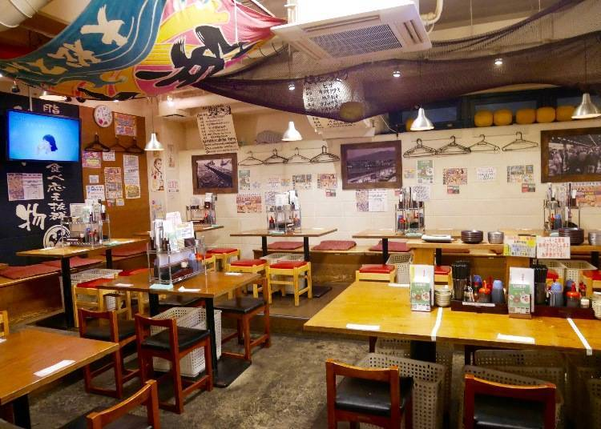
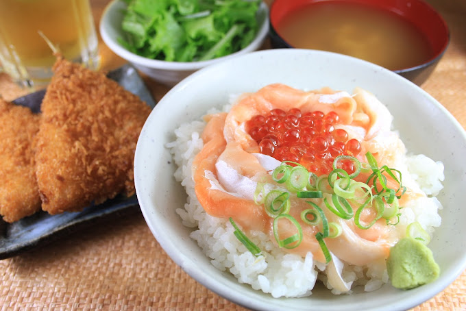
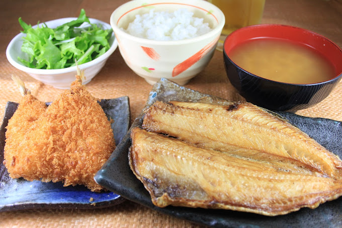
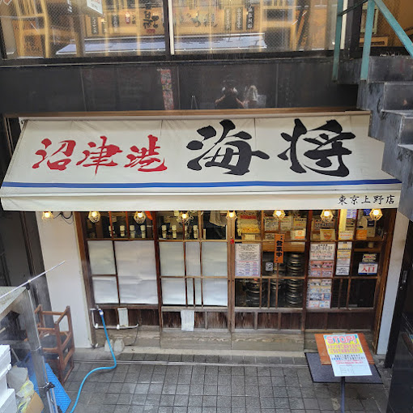
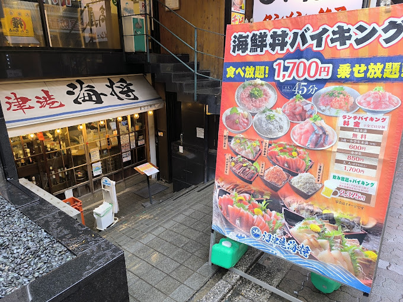
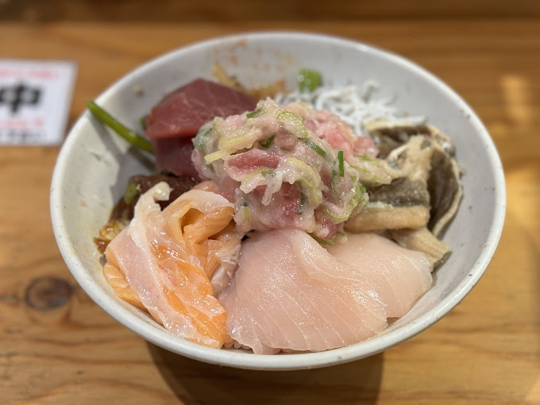
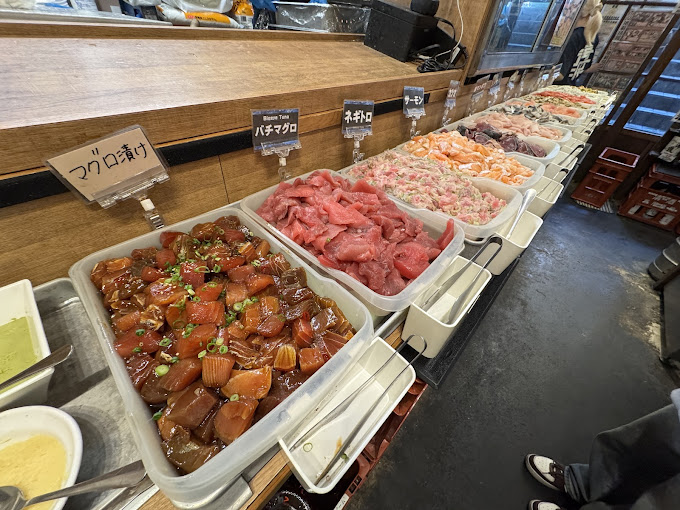

Infos pratiques / Restaurants / Tokyo / Numazuko Kaisho
Numazuko Kaisho - Ueno
Adresse fruits de mer tres pratique a Ueno, en sous-sol, avec acces rapide depuis Okachimachi et Ueno pour un repas poisson, sashimi ou formule plus genereuse.
Galerie photos










Résumé
Numazuko Kaisho est une option tres utile si vous voulez des fruits de mer a Ueno sans perdre de temps: acces gare, horaires clairs, menu anglais et possibilite de partir sur du poisson simple ou une formule plus complete.
Infos clés
- Nom : Numazuko Kaisho
- Adresse : Japon, 〒110-0005 Tokyo, Taito City, Ueno, 6 Chome-8-4, Gomi Building B1F
- Téléphone : 03-5817-8246
- Accès : JR Okachimachi North Exit 1 min ; Ueno-Hirokoji A3 4 min ; Ueno-Okachimachi A7 3 min ; JR Ueno Hirokoji 3 min
- Horaires observés : lun-sam 11:30 - 22:30 ; dim et jours fériés 11:30 - 22:00
- Fermeture : ouverte toute l'annee selon Gurunavi
- Style : fruits de mer, sashimi, izakaya de poisson, repas pratique a Ueno
- Menus utiles : menu anglais et menu chinois simplifie disponibles selon Gurunavi
- Formules : all-you-can-eat et all-you-can-drink signales sur Gurunavi
- Réservation : aucune reservation officielle claire confirmee dans les sources consultees
Pourquoi on le met au programme
- Le placement en plein secteur Ueno / Okachimachi est tres pratique dans un planning charge.
- Bonne adresse si vous voulez privilegier poisson, sashimi et ambiance izakaya plutot que viande.
- Le sous-sol du Gomi Building est un repere utile a partager pour eviter de tourner autour du bloc.
- La presence de menu anglais aide si tout le groupe ne lit pas le japonais.
Prix (JPY / EUR)
- Moyenne observee sur Gurunavi : lunch 2,000 JPY ≈ 10.89 EUR
- Moyenne observee sur Gurunavi : dinner 1,500 JPY ≈ 8.17 EUR
- Lecture pratique : l'addition varie selon assiettes de poisson, sashimi et eventuelle formule boisson
Conversion indicative sur base 1 EUR = 183.67 JPY (BCE, 10/03/2026). Les moyennes sont reprises telles qu'affichees sur Gurunavi consulte le 11/03/2026.
Conseils famille (5 personnes)
- Gardez bien le repere exact "Gomi Building B1F" sur tous les telephones.
- Cette fiche marche tres bien avant ou apres un trajet depuis Ueno.
- Si vous voulez une formule a volonte, verifiez-la sur place car Gurunavi la signale mais ne detaille pas tout en anglais.
- Comme l'acces est tres proche des gares, c'est une bonne option de secours quand vous ne voulez pas traverser Tokyo pour diner.